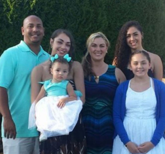

Jason Washington was born in California in 1973, the son of Vernon and Terri Washington. He
graduated from Wilson High School, where he met his future wife, Michelle. Soon after graduating,
he enlisted in the US Navy and served in and around San Diego. After his discharge from the service,
Jason worked as a letter carrier for the U.S. Postal Service. Jason and Michelle married and together
have three daughters. Jason Washington was a vibrant, warm-hearted individual who would always lend a
helping hand for those in need. He enjoyed playing and watching sports, and coached his daughters’
basketball teams. He lived in the SW Portland neighborhood, not too far from the PSU campus.
Link to Family Stories of Jason Washington: https.
